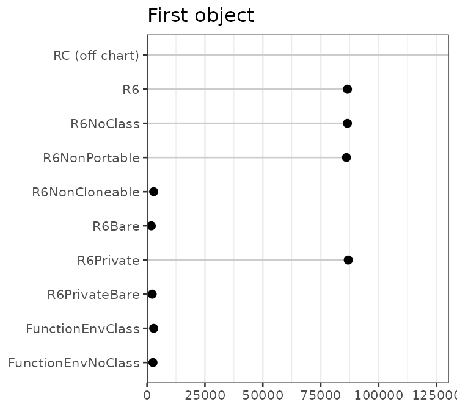
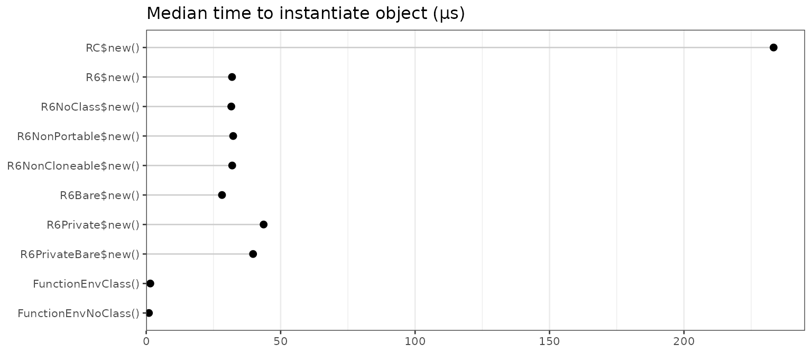
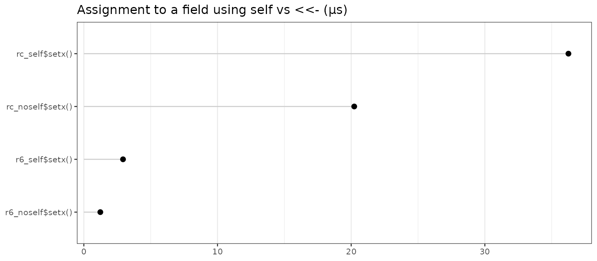

This document compares the memory costs and speed of R’s reference classes against R6 classes and simple environments. For most uses, R6 and reference classes have comparable features, but as we’ll see, R6 classes are faster and more lightweight.
This document tests reference classes against R6 classes (in many variations), as well as against very simple reference objects: environments created by function calls.
First we’ll load some packages which will be used below:
library(microbenchmark)
options(microbenchmark.unit = "us")
library(lobstr) # For obj_size function
library(R6)Class definitions
We’ll start by defining a number of classes or class-like entities, using reference classes, R6 classes, and simple environments that are created directly by functions. There are a number of options for R6 that can affect the size of the resulting objects, so we will use a number of variants. These classes will be used for the speed and memory tests that follow. This is a lot of boring code, so you may want to skip ahead to the results.
All of these classes have the same basic characteristics:
- A field named
xthat contains a number. - An way of initializing the value of
x. - A method named
getxfor retrieving the value ofx. - A method named
incfor incrementing the value ofx.
The fields and methods are accessed with the $ operator,
so if we have an object named obj, we could use
obj$x or obj$getx().
R reference class
RC <- setRefClass("RC",
fields = list(x = "numeric"),
methods = list(
initialize = function(x = 1) .self$x <- x,
getx = function() x,
inc = function(n = 1) x <<- x + n
)
)In reference classes, the binding that points back to the object is
named .self. Within a method, assignment can be done by
using .self, as in .self$x <- 10, or by
using <<-, as in x <<- 10.
To create an object, simply call $new() on the
class:
RC$new()
#> Reference class object of class "RC"
#> Field "x":
#> [1] 1R6 class
Creating an R6 class is similar to the reference class, except that there’s no need to separate the fields and methods, and you can’t specify the types of the fields.
R6 <- R6Class("R6",
public = list(
x = NULL,
initialize = function(x = 1) self$x <- x,
getx = function() self$x,
inc = function(n = 1) self$x <- x + n
)
)Whereas reference classes use .self, R6 classes use
self (without the leading period). As with reference
classes, objects are instantiated by calling $new():
R6$new()
#> <R6>
#> Public:
#> clone: function (deep = FALSE)
#> getx: function ()
#> inc: function (n = 1)
#> initialize: function (x = 1)
#> x: 1An R6 object essentially just a set of environments structured in a
particular way. The fields and methods for an R6 object have bindings
(that is, they have names) in the public environment. There is
also have a separate environment which is the enclosing
environment for methods (they “run in” an environment that contains
a binding named self, which is simply a reference to the
public environment).
R6 class, without class attribute
By default, a class attribute is added to R6 objects. This attribute
adds a slight performance penalty because R will attempt to use S3
dispatch when using $ on the object.
It’s possible generate objects without the class attribute, by using
class=FALSE:
R6NoClass <- R6Class("R6NoClass",
class = FALSE,
public = list(
x = NULL,
initialize = function(x = 1) self$x <- x,
getx = function() self$x,
inc = function(n = 1) self$x <- self$x + n
)
)Note that without the class attribute, S3 method dispatch on the objects is not possible.
R6 class, non-portable
By default, R6 objects are portable. This means that
inheritance can be in classes that are in different packages. However,
it also requires the use of self$ and private$
to access members, and this incurs a small performance penalty.
If portable=FALSE is used, members can be accessed
without using self$, and assignment can be done with
<<-:
R6 class, with cloneable=FALSE
By default, R6 objects have a clone() method, which is a
fairly large function. If you do not need this feature, you can save
some memory by using cloneable=FALSE.
R6 class, without class attribute, non-portable, and non-cloneable
For comparison, we’ll use a an R6 class that is without a class attribute, non-portable, and non-cloneable. This is the most stripped-down we can make an R6 object.
R6 class, with public and private members
This variant has public and private members.
R6Private <- R6Class("R6Private",
private = list(x = NULL),
public = list(
initialize = function(x = 1) private$x <- x,
getx = function() private$x,
inc = function(n = 1) private$x <- private$x + n
)
)Instead of a single self object which refers to all
items in an object, these objects have self (which refers
to the public items) and private.
R6Private$new()
#> <R6Private>
#> Public:
#> clone: function (deep = FALSE)
#> getx: function ()
#> inc: function (n = 1)
#> initialize: function (x = 1)
#> Private:
#> x: 1R6 class, with public and private, no class attribute, non-portable, and non-cloneable
For comparison, we’ll add a version that is without a class attribute, non-portable, and non-cloneable.
Environment created by a function call, with class attribute
In R, environments are passed by reference. A simple way to create an object that’s passed by reference is to use the environment created by the invocation of a function. The function below captures that environment, attaches a class to it, and returns it:
FunctionEnvClass <- function(x = 1) {
inc <- function(n = 1) x <<- x + n
getx <- function() x
self <- environment()
class(self) <- "FunctionEnvClass"
self
}Even though x isn’t declared in the function body, it
gets captured because it’s an argument to the function.
ls(FunctionEnvClass())
#> [1] "getx" "inc" "self" "x"Objects created this way are very similar to those created by
R6 generator we created above.
Environment created by a function call, without class attribute
We can make an even simpler type of reference object to the previous
one, by not having a a class attribute, and not having self
object:
FunctionEnvNoClass <- function(x = 1) {
inc <- function(n = 1) x <<- x + n
getx <- function() x
environment()
}This is simply an environment with some objects in it.
ls(FunctionEnvNoClass())
#> [1] "getx" "inc" "x"Tests
For all the timings using microbenchmark(), the results
are reported in microseconds, and the most useful value is probably the
median column.
Memory footprint
How much memory does a single instance of each object take, and how
much memory does each additional object take? We’ll use the functions
obj_size and obj_sizes (shown at the bottom of
this document) to calculate the sizes.
Sizes of each type of object, in bytes:
sizes <- obj_sizes(
RC$new(),
R6$new(),
R6NoClass$new(),
R6NonPortable$new(),
R6NonCloneable$new(),
R6Bare$new(),
R6Private$new(),
R6PrivateBare$new(),
FunctionEnvClass(),
FunctionEnvNoClass()
)
sizes
#> one incremental
#> RC$new() 2032832 1400
#> R6$new() 97200 1016
#> R6NoClass$new() 97920 896
#> R6NonPortable$new() 96872 960
#> R6NonCloneable$new() 14288 904
#> R6Bare$new() 13488 728
#> R6Private$new() 98112 1128
#> R6PrivateBare$new() 14512 840
#> FunctionEnvClass() 13424 616
#> FunctionEnvNoClass() 11944 504The results are plotted below. Note that the plots have very different x scales.

Some preliminary observations about the first instance of various
classes: Using a reference class consumes a large amount of memory. For
R6 objects, the option with the largest impact is
cloneable: not having the clone() method saves
around 40 kB of memory.
For subsequent instances of these classes, there isn’t nearly as much difference between the different kinds.
It appeared that using a reference class takes up a huge amount of memory, but much of that is shared between reference classes. Adding an object from a different reference class doesn’t require much more memory — around 38KB:
RC2 <- setRefClass("RC2",
fields = list(x = "numeric"),
methods = list(
initialize = function(x = 2) .self$x <<- x,
inc = function(n = 2) x <<- x * n
)
)
# Calcualte the size of a new RC2 object, over and above an RC object
as.numeric(obj_size(RC$new(), RC2$new()) - obj_size(RC$new()))
#> [1] 0 0Object instantiation speed
How much time does it take to create one of these objects? This shows the median time, in microseconds:
# Function to extract the medians from microbenchmark results
mb_summary <- function(x) {
res <- summary(x, unit="us")
data.frame(name = res$expr, median = res$median)
}
speed <- microbenchmark(
RC$new(),
R6$new(),
R6NoClass$new(),
R6NonPortable$new(),
R6NonCloneable$new(),
R6Bare$new(),
R6Private$new(),
R6PrivateBare$new(),
FunctionEnvClass(),
FunctionEnvNoClass()
)
speed <- mb_summary(speed)
speed
#> name median
#> 1 RC$new() 204.1005
#> 2 R6$new() 31.2135
#> 3 R6NoClass$new() 31.3035
#> 4 R6NonPortable$new() 31.6845
#> 5 R6NonCloneable$new() 31.4085
#> 6 R6Bare$new() 27.8320
#> 7 R6Private$new() 43.1850
#> 8 R6PrivateBare$new() 39.0180
#> 9 FunctionEnvClass() 1.4980
#> 10 FunctionEnvNoClass() 1.0120The plot below shows the median instantiation time.

Reference classes are much slower to instantiate than the other types of classes. Instantiating R6 objects is roughly 5 times faster. Creating an environment with a simple function call is another 20-30 times faster.
Field access speed
How much time does it take to access a field in an object? First we’ll make some objects:
rc <- RC$new()
r6 <- R6$new()
r6noclass <- R6NoClass$new()
r6noport <- R6NonPortable$new()
r6noclone <- R6NonCloneable$new()
r6bare <- R6Bare$new()
r6priv <- R6Private$new()
r6priv_bare <- R6PrivateBare$new()
fun_env <- FunctionEnvClass()
fun_env_nc <- FunctionEnvNoClass()And then get a value from these objects:
speed <- microbenchmark(
rc$x,
r6$x,
r6noclass$x,
r6noport$x,
r6noclone$x,
r6bare$x,
r6priv$x,
r6priv_bare$x,
fun_env$x,
fun_env_nc$x
)
speed <- mb_summary(speed)
speed
#> name median
#> 1 rc$x 5.7510
#> 2 r6$x 0.6510
#> 3 r6noclass$x 0.2155
#> 4 r6noport$x 0.6965
#> 5 r6noclone$x 0.7015
#> 6 r6bare$x 0.2200
#> 7 r6priv$x 0.7120
#> 8 r6priv_bare$x 0.2210
#> 9 fun_env$x 0.6420
#> 10 fun_env_nc$x 0.2210Accessing the field of a reference class is much slower than the other methods.
There’s also an obvious pattern where accessing the field of an
environment (created by R6 or a function call) is slower when there is a
class attribute. This is because, for the objects that have a class
attribute, R attempts to look up an S3 method for $, and
this lookup has a performance penalty. We’ll see more about this
below.
Field setting speed
How much time does it take to set the value of a field in an object?
speed <- microbenchmark(
rc$x <- 4,
r6$x <- 4,
r6noclass$x <- 4,
r6noport$x <- 4,
r6noclone$x <- 4,
r6bare$x <- 4,
# r6priv$x <- 4, # Can't set private field directly,
# r6priv_nc_np$x <- 4, # so we'll skip these two
fun_env$x <- 4,
fun_env_nc$x <- 4
)
speed <- mb_summary(speed)
speed
#> name median
#> 1 rc$x <- 4 30.5470
#> 2 r6$x <- 4 1.1670
#> 3 r6noclass$x <- 4 0.6915
#> 4 r6noport$x <- 4 1.2525
#> 5 r6noclone$x <- 4 1.2720
#> 6 r6bare$x <- 4 0.7110
#> 7 fun_env$x <- 4 1.1820
#> 8 fun_env_nc$x <- 4 0.6865Reference classes are significantly slower than the others, again. In this case, there’s additional overhead due to type-checking the value.
Once more, the no-class objects are significantly faster than the
others, again probably due to attempted S3 dispatch on the
`$<-` function.
Speed of method call that accesses a field
How much overhead is there when calling a method from one of these
objects? All of these getx() methods simply return the
value of x in the object. When necessary, this method uses
self$x (for R6 classes, when portable=TRUE),
and in others, it just uses x (when
portable=FALSE, and in reference classes).
speed <- microbenchmark(
rc$getx(),
r6$getx(),
r6noclass$getx(),
r6noport$getx(),
r6noclone$getx(),
r6bare$getx(),
r6priv$getx(),
r6priv_bare$getx(),
fun_env$getx(),
fun_env_nc$getx()
)
speed <- mb_summary(speed)
speed
#> name median
#> 1 rc$getx() 5.9410
#> 2 r6$getx() 1.5630
#> 3 r6noclass$getx() 0.5510
#> 4 r6noport$getx() 0.8520
#> 5 r6noclone$getx() 1.6530
#> 6 r6bare$getx() 0.3610
#> 7 r6priv$getx() 1.0620
#> 8 r6priv_bare$getx() 0.3655
#> 9 fun_env$getx() 0.9120
#> 10 fun_env_nc$getx() 0.4710The reference class is the slowest.
r6 is also somewhat slower than the others. There are
two reasons for this: first, it uses self$x which adds some
time, and second, it has a class attribute, which slows down the access
of both r6$getx and self$x.
One might expect r6priv to be the same speed as
r6, but it is faster. Although accessing
r6priv$getx is slow because r6priv has a class
attribute, accessing private$x is faster because it does
not have a class attribute.
The objects which can access x directly (without
self or private) and which lack a class
attribute are the fastest.
Assignment using self$x <-
vs. x <<-
With reference classes, you can modify fields using the
<<- operator, or by using the .self
object. For example, compare the setx() methods of these
two classes:
RCself <- setRefClass("RCself",
fields = list(x = "numeric"),
methods = list(
initialize = function() .self$x <- 1,
setx = function(n = 2) .self$x <- n
)
)
RCnoself <- setRefClass("RCnoself",
fields = list(x = "numeric"),
methods = list(
initialize = function() x <<- 1,
setx = function(n = 2) x <<- n
)
)Non-portable R6 classes are similar, except they use
self instead of .self.
R6self <- R6Class("R6self",
portable = FALSE,
public = list(
x = 1,
setx = function(n = 2) self$x <- n
)
)
R6noself <- R6Class("R6noself",
portable = FALSE,
public = list(
x = 1,
setx = function(n = 2) x <<- n
)
)
rc_self <- RCself$new()
rc_noself <- RCnoself$new()
r6_self <- R6self$new()
r6_noself <- R6noself$new()
speed <- microbenchmark(
rc_self$setx(),
rc_noself$setx(),
r6_self$setx(),
r6_noself$setx()
)
speed <- mb_summary(speed)
speed
#> name median
#> 1 rc_self$setx() 36.7235
#> 2 rc_noself$setx() 20.4730
#> 3 r6_self$setx() 2.9305
#> 4 r6_noself$setx() 1.3370
For both reference and non-portable R6 classes, assignment using
.self$x <- is somewhat slower than using
x <<-.
Bear in mind that, by default, R6 classes are portable, and can’t use
assignment with x <<-.
Overhead from using $ on objects with a class
attribute
There is some overhead when using $ on an object that
has a class attribute. In the test below, we’ll create three different
kinds of objects:
- An environment with no class attribute.
- An environment with a class
"e2", but without a$.e2S3 method. - An environment with a class
"e3", which has a$.e3S3 method that simply returnsNULL.
Each one of these environments will contain an object
x.
e1 <- new.env(hash = FALSE, parent = emptyenv())
e2 <- new.env(hash = FALSE, parent = emptyenv())
e3 <- new.env(hash = FALSE, parent = emptyenv())
e1$x <- 1
e2$x <- 1
e3$x <- 1
class(e2) <- "e2"
class(e3) <- "e3"
# Define an S3 method for class e3
`$.e3` <- function(x, name) {
NULL
}Now we can run timing tests for calling $ on each type
of object. Note that for the e3 object, the $
function does nothing — it simply returns NULL.
speed <- microbenchmark(
e1$x,
e2$x,
e3$x
)
speed <- mb_summary(speed)
speed
#> name median
#> 1 e1$x 0.2000
#> 2 e2$x 0.5565
#> 3 e3$x 0.8515Using $ on e2 and e3 is much
slower than on e1. This is because e2 and
e3 have a class attribute. Even though there’s no
$ method defined for e2, doing
e2$x still about 6 times slower than e1$x,
simply because R looks for an appropriate S3 method.
e3$x is slightly faster than e2$x; this is
probably because the $.e3 function doesn’t actually do
anything other than return NULL.
If an object has a class attribute, R will attempt to look for a
method every time $ is called. This can slow things down
considerably, if $ is used often.
Lists vs. environments, and $ vs. [[
Lists could also be used for creating classes (albeit not with
reference semantics). How much time does it take to access items using
$ for lists vs. environments? We’ll also compare using
obj$x to obj[['x']].
lst <- list(x = 10)
env <- new.env()
env$x <- 10
mb_summary(microbenchmark(
lst = lst$x,
env = env$x,
lst[['x']],
env[['x']]
))
#> name median
#> 1 lst 0.181
#> 2 env 0.170
#> 3 lst[["x"]] 0.140
#> 4 env[["x"]] 0.111Performance is comparable across environments and lists.
The [[ operator is slightly faster than $,
probably because it doesn’t need to convert the unevaluated symbol to a
string.
Wrap-up
R6 objects take less memory and are significantly faster than R’s reference class objects, and they also have some options that provide for even more speed.
In these tests, the biggest speedup for R6 classes comes from not
using a class attribute; this speeds up the use of $.
Non-portable R6 classes can also access fields without $ at
all, which provides another modest speed boost. In most cases, these
speed increases are negligible – they are on the order of microseconds
and will be noticeable only when tens or even hundreds of thousands of
class member accesses are performed.
Appendix
Functions for calculating object sizes
# Utility functions for calculating sizes
obj_size <- function(expr, .env = parent.frame()) {
size_n <- function(n = 1) {
objs <- lapply(1:n, function(x) eval(expr, .env))
as.numeric(do.call(lobstr::obj_size, objs))
}
data.frame(one = size_n(1), incremental = size_n(2) - size_n(1))
}
obj_sizes <- function(..., .env = parent.frame()) {
exprs <- as.list(match.call(expand.dots = FALSE)$...)
names(exprs) <- lapply(1:length(exprs),
FUN = function(n) {
name <- names(exprs)[n]
if (is.null(name) || name == "") paste(deparse(exprs[[n]]), collapse = " ")
else name
})
sizes <- mapply(obj_size, exprs, MoreArgs = list(.env = .env), SIMPLIFY = FALSE)
do.call(rbind, sizes)
}System information
sessionInfo()
#> R version 4.4.1 (2024-06-14)
#> Platform: x86_64-pc-linux-gnu
#> Running under: Ubuntu 22.04.4 LTS
#>
#> Matrix products: default
#> BLAS: /usr/lib/x86_64-linux-gnu/openblas-pthread/libblas.so.3
#> LAPACK: /usr/lib/x86_64-linux-gnu/openblas-pthread/libopenblasp-r0.3.20.so; LAPACK version 3.10.0
#>
#> locale:
#> [1] LC_CTYPE=C.UTF-8 LC_NUMERIC=C LC_TIME=C.UTF-8
#> [4] LC_COLLATE=C.UTF-8 LC_MONETARY=C.UTF-8 LC_MESSAGES=C.UTF-8
#> [7] LC_PAPER=C.UTF-8 LC_NAME=C LC_ADDRESS=C
#> [10] LC_TELEPHONE=C LC_MEASUREMENT=C.UTF-8 LC_IDENTIFICATION=C
#>
#> time zone: UTC
#> tzcode source: system (glibc)
#>
#> attached base packages:
#> [1] stats graphics grDevices utils datasets methods base
#>
#> other attached packages:
#> [1] scales_1.3.0 ggplot2_3.5.1 R6_2.5.1.9000
#> [4] lobstr_1.1.2 microbenchmark_1.4.10
#>
#> loaded via a namespace (and not attached):
#> [1] gtable_0.3.5 jsonlite_1.8.8 highr_0.11
#> [4] compiler_4.4.1 jquerylib_0.1.4 systemfonts_1.1.0
#> [7] textshaping_0.4.0 yaml_2.3.10 fastmap_1.2.0
#> [10] labeling_0.4.3 knitr_1.48 tibble_3.2.1
#> [13] desc_1.4.3 munsell_0.5.1 bslib_0.8.0
#> [16] pillar_1.9.0 rlang_1.1.4 utf8_1.2.4
#> [19] cachem_1.1.0 xfun_0.47 fs_1.6.4
#> [22] sass_0.4.9 cli_3.6.3 pkgdown_2.1.0
#> [25] withr_3.0.1 magrittr_2.0.3 digest_0.6.37
#> [28] grid_4.4.1 lifecycle_1.0.4 vctrs_0.6.5
#> [31] evaluate_0.24.0 glue_1.7.0 farver_2.1.2
#> [34] codetools_0.2-20 ragg_1.3.2 fansi_1.0.6
#> [37] colorspace_2.1-1 rmarkdown_2.28 tools_4.4.1
#> [40] pkgconfig_2.0.3 htmltools_0.5.8.1